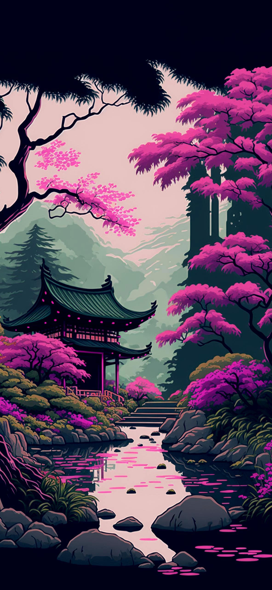

| Hugo Cantos Benavente |
|---|
|
¡Hola! Soy Hugo, tengo 18 años y soy de España. Actualmente estudio SMR (Sistemas Microinformáticos y Redes) y tengo intención de seguir formándome en
el mundo de la informática, especialmente en DAW o DAM. La tecnología es una de mis grandes pasiones: me gusta trastear con ordenadores, hardware,
programación, videojuegos y todo lo relacionado con el mundo tecnológico. También soy bastante friki —en el buen sentido 😂—. Me encanta el anime, el manga, la cultura japonesa y los videojuegos. Algunos de los juegos que más me gustan son Genshin Impact, Honkai: Star Rail, Minecraft y Elden Ring, entre otros. También me interesa muchísimo Japón, y me gustaría poder viajar allí algún día y aprender japonés más allá de simplemente utilizar una aplicación. Pero creo que lo que más me caracteriza no son la informática ni los videojuegos, sino mi forma de ser. Soy una persona bastante introvertida y tranquila, y disfruto mucho estando a mi aire. No necesito estar constantemente rodeado de gente para pasarlo bien. Puedo disfrutar perfectamente dando un paseo, montando en bici, dibujando, viendo una serie o simplemente hablando durante horas sobre algún tema que me interese. A la vez, considero que soy una persona bastante sensible y empática. Me preocupo mucho por las personas que quiero y suelo implicarme bastante en mis relaciones. Busco amistades en las que haya confianza, sinceridad y reciprocidad, porque no me gustan demasiado las relaciones superficiales o aquellas en las que siento que solamente una persona pone esfuerzo. También soy bastante de darle vueltas a las cosas. 😂 Mi cabeza puede coger una situación de cinco minutos y convertirla en una investigación del FBI de tres horas. Pero creo que esa misma capacidad de analizar las cosas también hace que sea una persona bastante reflexiva. Me interesa entender por qué siento algo, por qué ocurre algo y cómo puedo mejorar. En los estudios soy bastante exigente conmigo mismo. Terminé SMR1 con unas notas muy buenas, y quiero seguir creciendo dentro de la informática. No suelo conformarme simplemente con que algo "funcione"; muchas veces quiero entender cómo funciona realmente. Además, últimamente he descubierto otra faceta de mí: el dibujo. Después de haber dejado esa afición de pequeño, he vuelto a ella con el iPad y estoy aprendiendo por mi cuenta, experimentando con dibujo digital y especialmente con cosas más realistas. Me interesa aprender de verdad y mejorar poco a poco. En cuanto a mi estilo de vida, valoro bastante cosas como hacer ejercicio, montar en bici, caminar, estar al aire libre y cuidar mi salud. No soy especialmente amigo de la cultura de salir de fiesta por salir, beber o fumar. Me pega mucho más un paseo tranquilo, una buena conversación o una tarde haciendo algo que realmente me guste. Y hay algo que creo que resume bastante bien mi personalidad: Soy una persona que está intentando construirse a sí misma. No tengo perfectamente decidido quién quiero ser dentro de diez años —nadie lo tiene con 18 años 😂—, pero sí tengo bastante claro qué valores quiero conservar: ser buena persona, fiable, honesto, independiente, responsable y alguien de quien pueda sentirme orgulloso. Creo que eso se refleja incluso en cosas aparentemente pequeñas. Puedo pasar de estar preguntándome "¿cómo centro un div en CSS?" a poco después estar pensando sobre mi futuro, mis amistades, Japón, el sentido de la vida o por qué demonios mi PC decide bloquearse a 60 FPS. 😂 En resumen, me considero un chico tranquilo, curioso, tecnológico, friki, sensible y bastante reflexivo, que está entrando en una etapa nueva de su vida y tratando de descubrir qué quiere hacer con ella sin dejar atrás la persona que quiere ser. Y sí, también soy bastante cuadriculado. Esa parte no podía faltar. 😂 |
